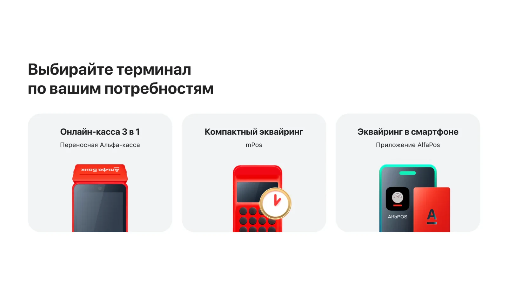
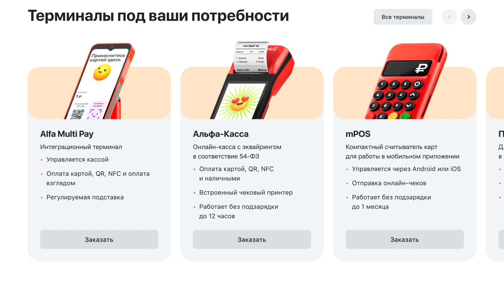
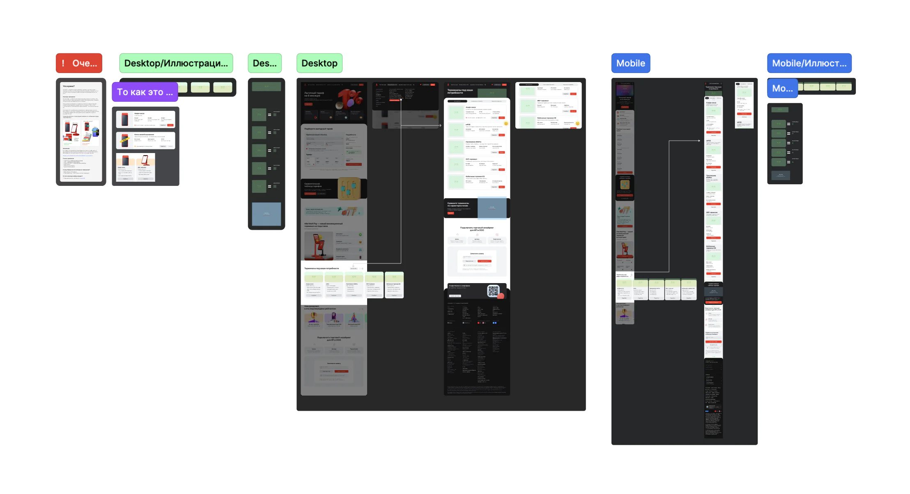
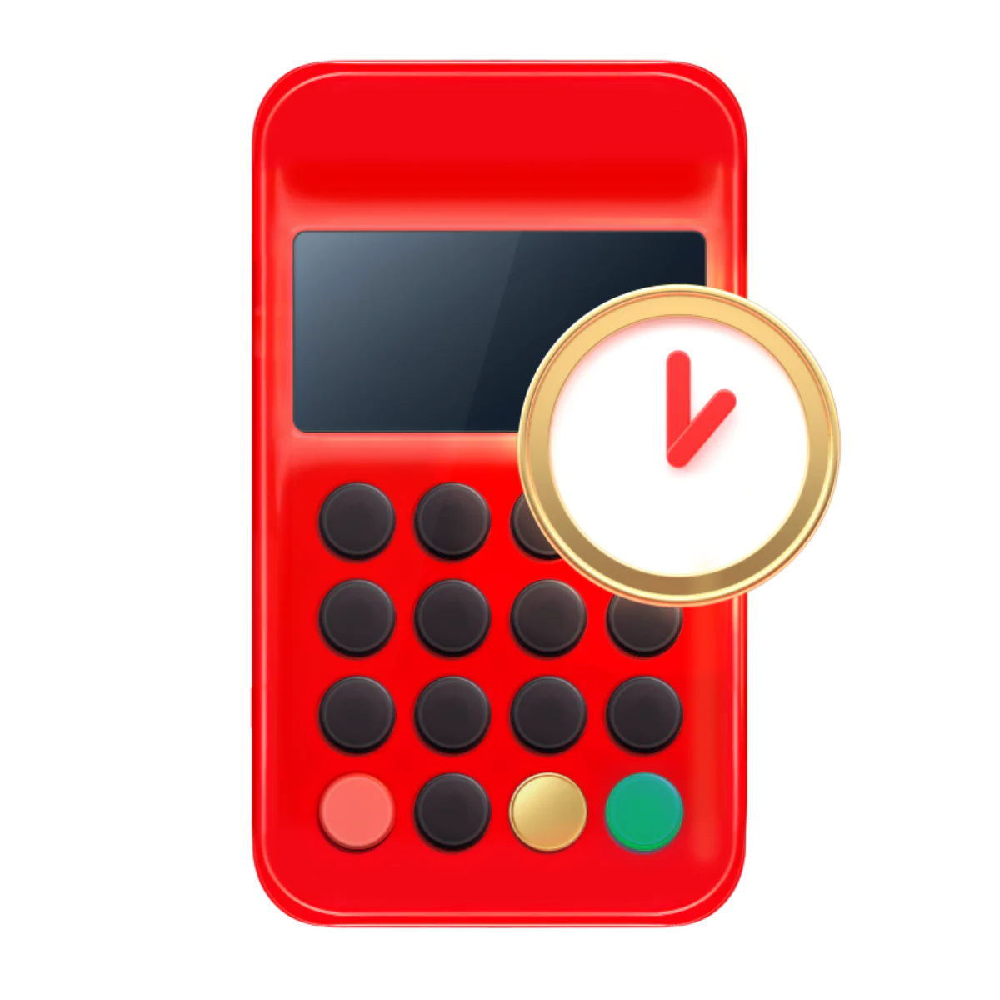
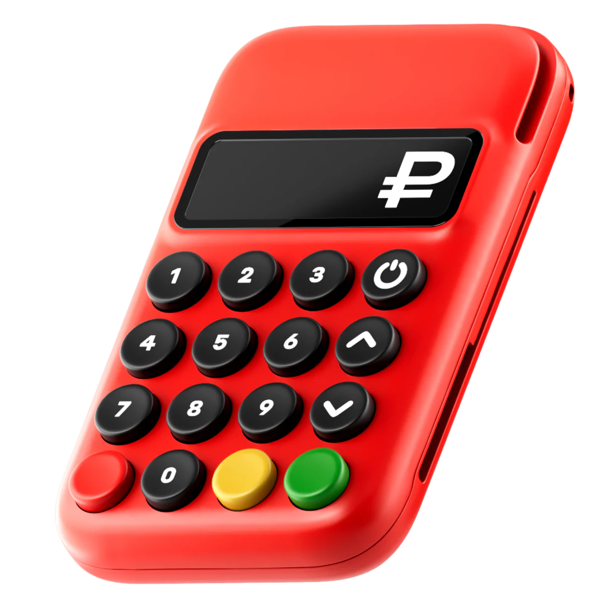
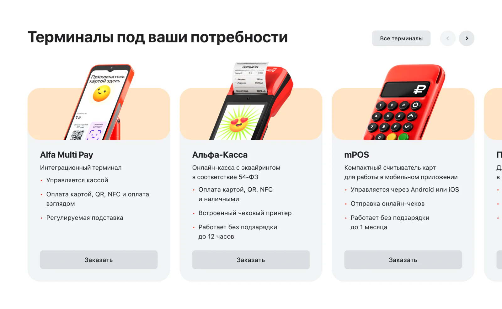
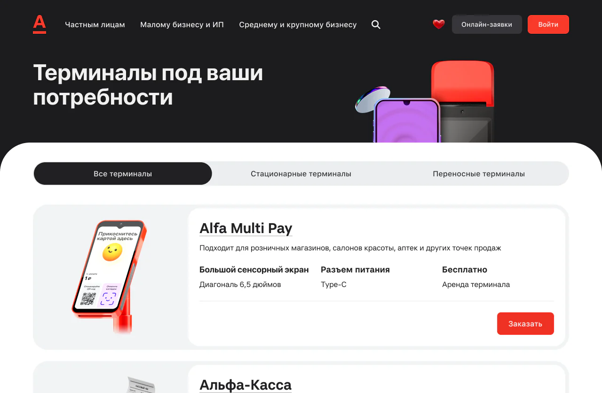
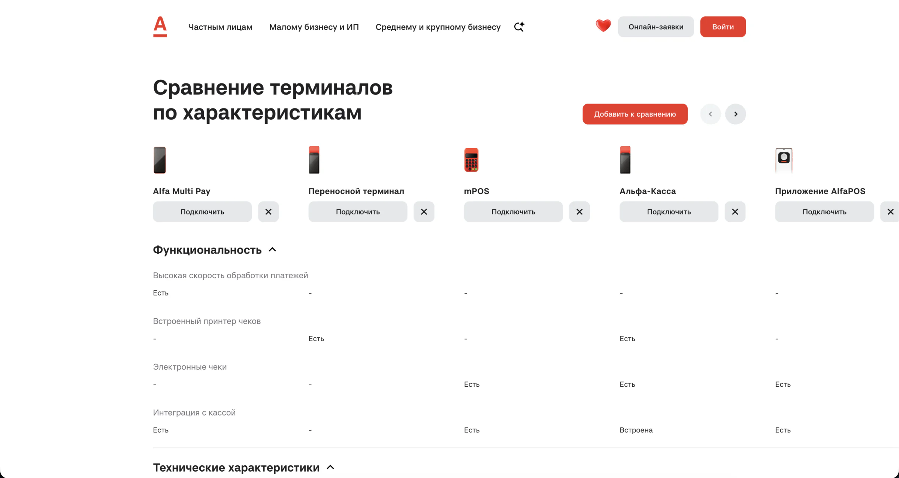
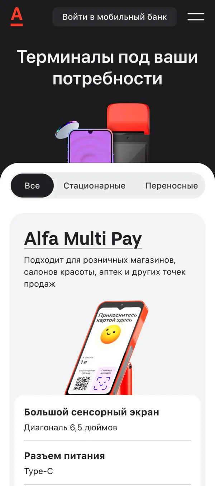
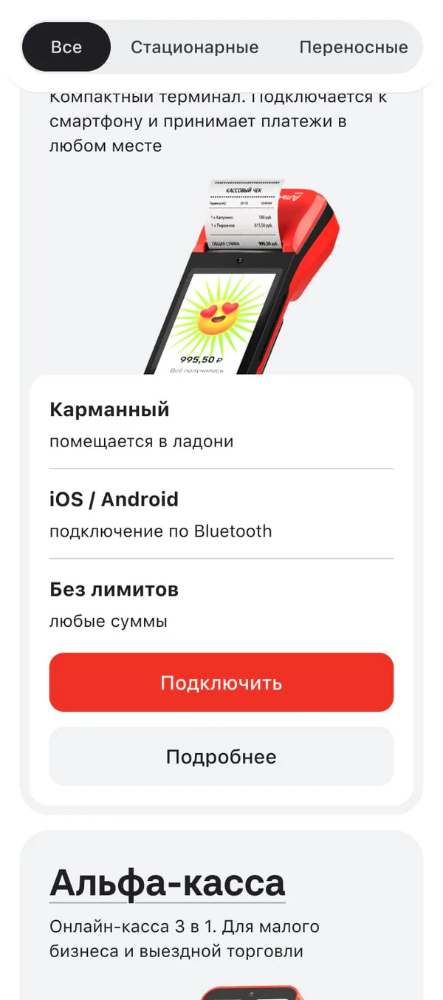

Ending a two-year stand-off over how terminals look
Business wanted real photos of payment terminals, the brand guidelines banned them. I found a third way — hyper-real 3D — then grew a request to “refresh a block” into a terminal showcase with a comparison table and a 30-second quiz.


Context
A shop owner looks at a payment terminal on the counter every day, so its look shapes the choice — right before the application. In 2024 an external research agency found three problems in the terminals block:
- People couldn't see what a terminal looks like and went to a search engine to find out
- Half of the range was hidden behind a grey arrow on a grey background. Rated high severity
- “Choose” led to the wrong place — the tariff calculator instead of the terminal
A grey arrow on a grey background — I just didn't notice it and skipped three whole types of terminal. It's like looking for a black cat in a dark room.
Business owner, uses acquiring from another bank
Problem
The fix was obvious — show real terminals. It was blocked for more than two years.
Business wanted photos to protect conversion. Marketing's guidelines allow only the site's 3D style, to protect the brand. Neither could simply win, so nobody could set a task the other side would accept.
Reframe
Both sides argued about the form: marketing treated any step away from the 3D style as a violation, the business couldn't see any option other than photos.
But nobody actually needed a photo. People needed to recognise the device — its shape, screen, buttons and size.
That can be done inside the brand's rules.
Decision 1: hyper-real 3D
- Real photos — solve the user's problem, break the guidelines. Marketing says no
- The current stylised 3D — keeps the style, leaves the problem. Business says no
- 3D that models each real device — looks like the terminal on the counter and stays in the site's visual language. Both sides get what they protect
AI-generated concepts sold the idea to the business in one meeting. Then I wrote a detailed brief for the 3D team — what each render shows, references, and how not to do it — because the blocker had never been the work, only agreeing on the task.



Decision 2: a showcase, not a block
Any block would still hide part of the range, so I proposed a separate showcase page, built on the bank's debit card showcase that clients already know.





Decision 3: a 30-second quiz
“Choose” now does what it promised: a few questions about the business, a matched terminal — and an order button that goes straight into the application.
- 2024Research: people can't see what a terminal looks like, half the range is hidden
- End of 2024A first fix, before I joined the team — the problems stay
- Early 2025I question the illustrations and unblock the stand-off with hyper-real 3D
- 2025The 3D team draws the renders from my brief; the quiz ships
- End of Q1 2026The showcase goes live
- Q2 2026CR1 grows by 38%
- 2026Research again: enough information to choose a terminal
Results
In the quarter after launch CR1 — visitors who start an application — grew by +38% (). We ship on several fronts at once, so I count the showcase as a contribution, not the only cause.
Moderated sessions with 10 business owners in 2026 confirmed that people now have enough information to choose — the block that produced three problems in 2024 gave the researchers nothing to flag.
| 2024 | What changed | 2026 |
|---|---|---|
| Can't see what a terminal looks like | Hyper-real 3D | People recognise their own terminal by the picture |
| Half the range hidden in a carousel | Showcase with every type and filters | Enough information to choose |
| “Choose” leads to the tariff calculator | More pages, comparison, quiz | Enough tools to choose |
- Experienced owners recognised terminals by the picture, before reading anything: “oh, I've got this one”
- First-time owners read the descriptions and chose by their task: “I'd take this one, it suits me”
I also passed the renders to the acquiring designers in the mobile app and the internet bank, so the same terminals reach every channel.
What I took from it
- Nothing was invented from scratch. The value was in putting the right ingredients together at the right moment: renders, a familiar pattern, a homeless comparison table and a quiz
- A sharpened blade, not one big launch. Each step is hard to measure alone, but the product gets easier to choose from — and conversion follows
- Start from the user's need. It turned a two-year political problem into a design one